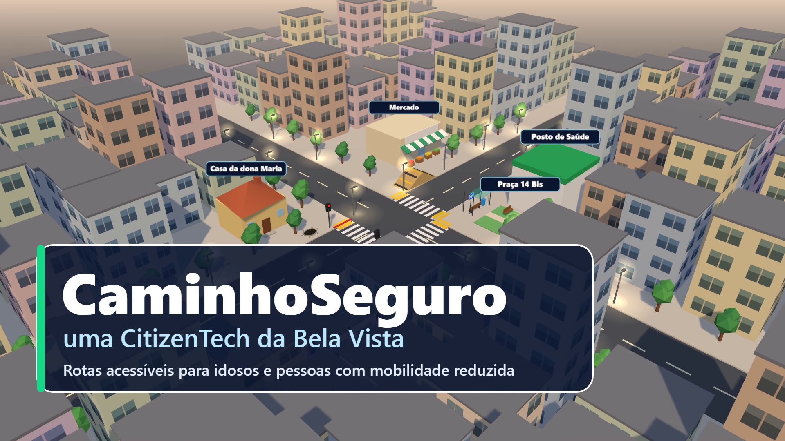
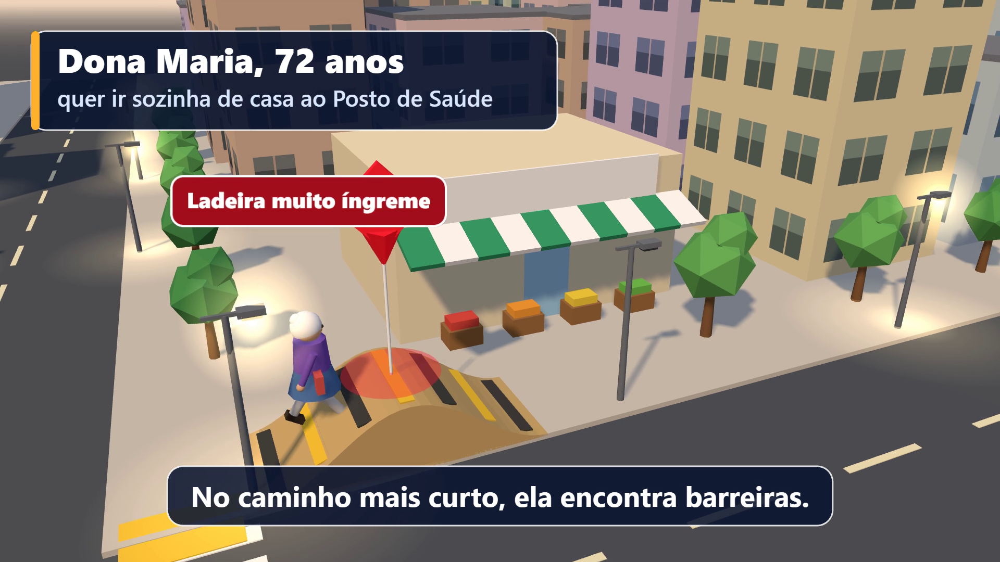
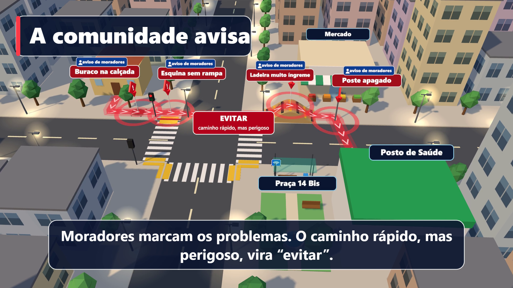
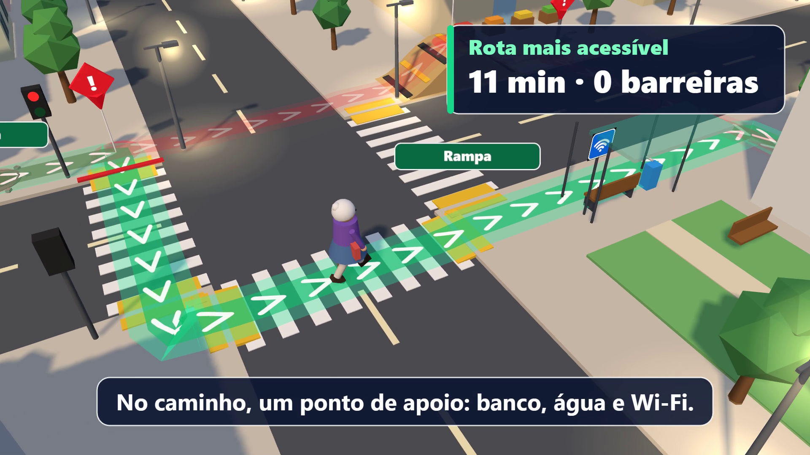
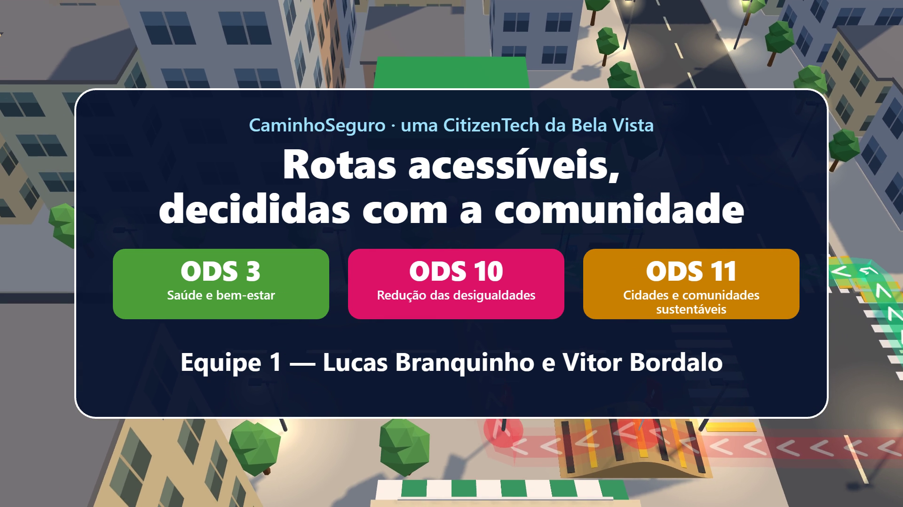

Global Solution FIAP 2026.2 · CitizenTech · Engenharia de Software, 2º ano · Turma 2ESPH · Equipe 1
| Integrante | RM |
|---|---|
| Lucas Branquinho | 562262 |
| Vitor Bordalo | 561592 |
O CaminhoSeguro é uma CitizenTech para idosos e pessoas com mobilidade reduzida do bairro Bela Vista (São Paulo). O app calcula a rota mais acessível, a mais segura ou a mais rápida, e usa os problemas de calçada que a própria comunidade registra. A simulação 3D mostra a mesma rota pelos olhos do cidadão: por que o caminho mais curto pode ser perigoso e como a rota acessível evita as barreiras. A personagem dona Maria (72 anos) é fictícia.
| Tempo | Cena |
|---|---|
| 0–6 s | Vista aérea de um quarteirão 3D da Bela Vista com o título “CaminhoSeguro, uma CitizenTech da Bela Vista”. |
| 6–20 s | A câmera desce até a calçada. Dona Maria sai de casa e, no caminho mais curto, aparecem as barreiras: buraco na calçada, esquina sem rampa, ladeira muito íngreme e poste apagado. |
| 20–32 s | “A comunidade avisa”: os moradores marcam os problemas no mapa e o caminho rápido, mas perigoso, fica marcado como “evitar”. |
| 32–48 s | O app calcula a rota mais acessível (linha verde no chão), que passa por rampas, uma faixa com semáforo e um ponto de apoio com banco, água e Wi-Fi. Painel: “Rota mais acessível · 11 min · 0 barreiras”. |
| 48–55 s | Chegada ao Posto de Saúde, a câmera sobe e aparece a mensagem final com os ODS 3, 10 e 11 e os integrantes. |





renderFrame(t) posiciona câmera, avatar e marcadores para cada instante. Cada quadro foi capturado pelo Chrome (DevTools Protocol) a 30 fps e montado em vídeo 1920x1080 com ffmpeg, com trilha sonora sintetizada.node gravar.mjs --servir).Código-fonte: https://github.com/lucasfbranquinho/citizentech-caminhoseguro (pasta 02-ar-vr).